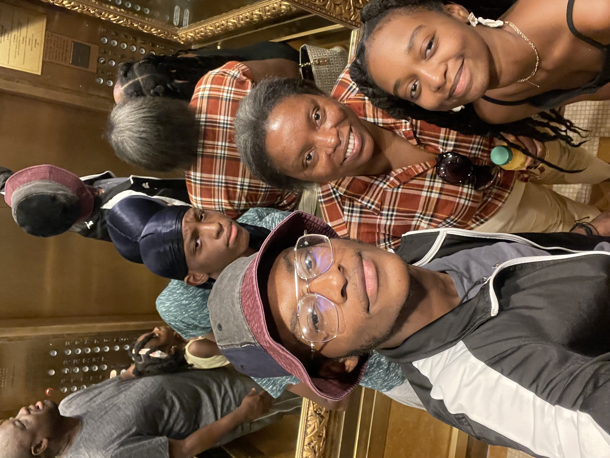
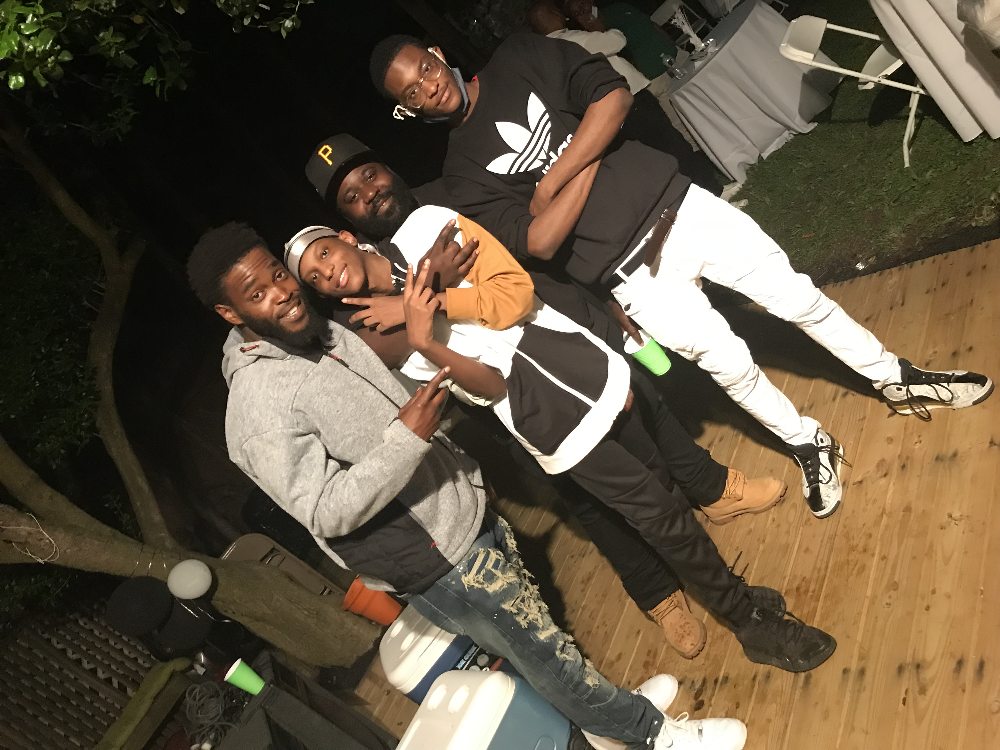
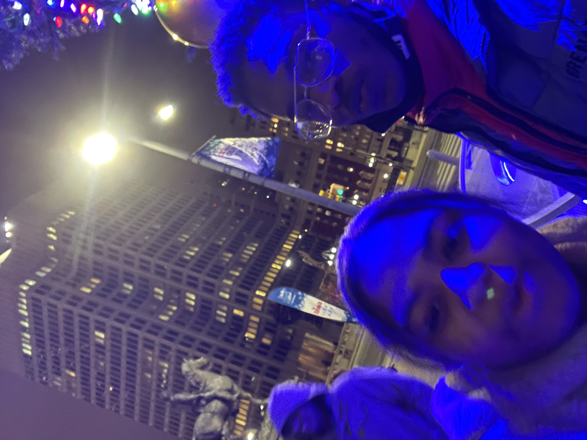
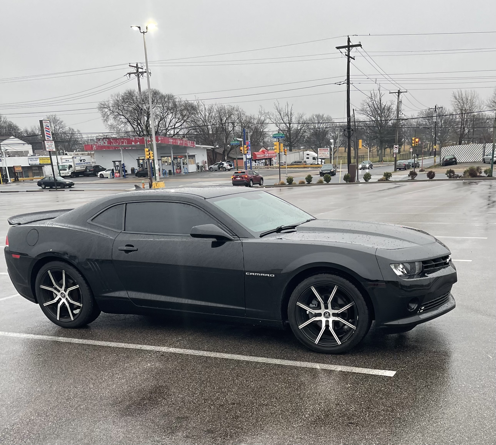

Over the Winter break I got to see my family, friends and relatives, it was great chance for us to see each other since most of us are at school and or working. It was really good to see their faces as we were trying to figure out things to do together.



Most of the time I was either playing on my ps5, sleeping or watching tv when I didnt want to go outside. Which was pretty much majority of the time! Even if I were not doing anything special it was still nice to have some relaxing time where I could enjoy my own company.
over the break the best thing that happened to me was getting a new car! It almost didnt feel real at first. Im thinking about changing the color to green when I have more money saved up.

The Bad
The only bad thing about winter break is that I couldn't go to most of the places that I wanted to go beause they were closed off due to the virus. We tried our best to make it work dispite the fact that we had limited places to go and things to do.
also there was the fact that I had to go to work....